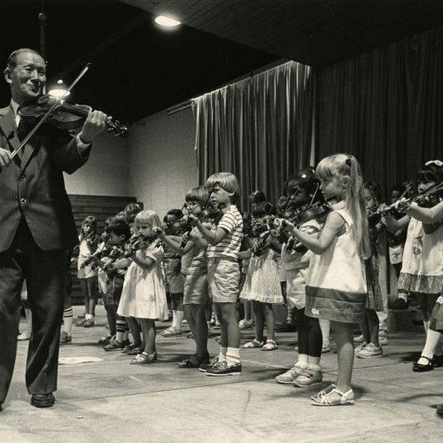

Hayao Miyazaki

(born January 5, 1941, Tokyo, Japan), Japanese anime director, whose lyrical and allusive works won both critical and popular acclaim. En 1984, vino Nausicaä del Valle del Viento. En la primera mitad de los años 1980 dirigió algunos episodios de la serie animada Sherlock Holmes y en 1985, junto a Isao Takahata, abre su propio estudio de animación: Studio Ghibli, donde siguió produciendo películas.
Works
Shin'inchi Suzuki

Japanese musician, philosopher, and educator and the founder of the international Suzuki method of music education and developed a philosophy for educating people of all ages and abilities. Considered an influential pedagogue in music education of children, he often spoke of the ability of all children to learn things well, especially in the right environment, and of developing the heart and building the character of music students through their music education. Before his time, it was rare for children to be formally taught classical instruments from an early age and even more rare for children to be accepted by a music teacher without an audition or entrance examination.